Malware Sample - Academic Exam
Introduction
This document details the analysis of a malware sample assigned for the Malware Analysis and Incident Forensics university exam at Sapienza University of Rome. The analysis focuses on understanding the internal structure, execution flow, and malicious capabilities of the sample.
Static Analysis
Packing Detection
Examining the sample with PE Studio quickly reveals numerous details. The sections are named UPX0 and UPX1. The entry point is not located in the first section.
Both sections have write and execute permissions, the UPX1 section exhibits a high level of entropy, and the virtual size of the first section is significantly larger than its raw size.
Since the entry point is located in the UPX1 section, it is likely that this section contains the decompression stub responsible for unpacking the original executable at runtime.

The imports section contains some functions that are potential indicators or could reveal the sample's behavior. They are the following:
- GetProcAddress, LoadLibraryA which are typical of packed software that has to rebuild the IAT
- MessageBoxA, which means that the sample shows some message box
- CryptStringToBinar, which is probably used for obfuscation purposes
- SHGetFolderPathA, which means that the malware interacts with the filesystem
The strings section contains a lot of junk-like strings, maybe they are just compressed or obfuscated. Some strings could reveal something about the behavior of the sample. They are the following:
- Function names (GetProcAddress, LoadLibraryA, SHGetFolderPath, CryptStringToBinary, MessageBoxA).
- Library names (NETAPI32.dll, kernel32.dll, shell32.dll, user32.dll).
- Extentions (.jpg, .dll).
- A strange string ?mafuba&%s\%s.jpgUghn, probably the sample create a file .jpg in a specific folder.
The library section contains some libraries that could reveal the sample's behavior. They are the following:
- shell32.dll, which likely means that the sample interacts with other processes.
- crypt32.dll, which likely means that the malware performs some kind of encryption.
- user32.dll, which likely means that the sample performs user-level interactions such as showing a message box.
- kernel32.dll, which likely means that the sample uses some important function like CreateFile, WriteFile, VirtualAlloc, WriteProcessMemory and others.
As section names suggested and as Detect It Easy confirmed, the sample was packed with UPX (version 3.96).
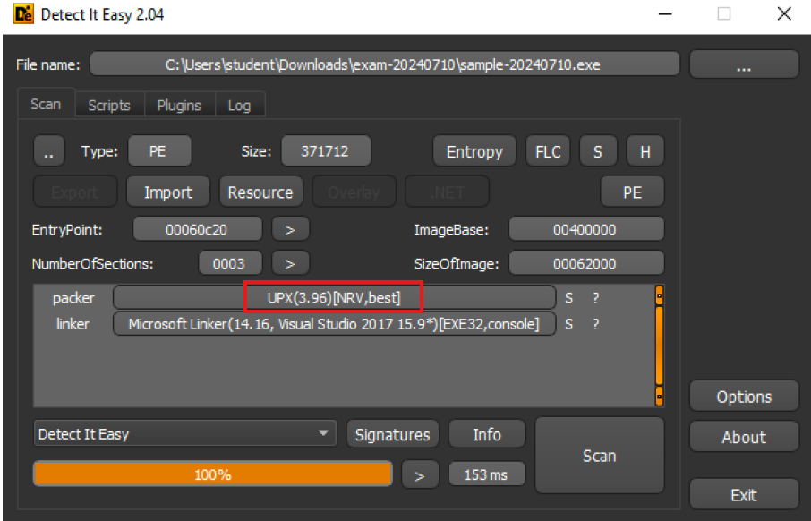
Unpacking
To find the Original Entry Point of a packed sample it’s necessary to locate the tail jump, that is the jump that the packed sample performs to the beginning of the unpacked code after the unpacking
stub has finished its operations. There are some indicators useful to recognize the tail jump: the instruction jumps to another section (in this case from UPX1 to UPX0),
after the tail jump should be a bunch of garbage bytes and the destination was previously modified by the unpacking stub.
After opening the sample in x32dbg and starting at the entry point in UPX1 (0x460C20), the first instruction is a pusha,
used to save the register values at startup. Most likely, there will be a corresponding popa instruction just before the tail jump.

There is a practical and reliable technique to identify the tail jump: place an HW breakpoint on memory access on the first 4 bytes of data pushed onto the stack at
ESP immediately after the first pushapopa
instruction to restore the saved execution context.
The figure below highlights the tail jump located at address 0x460DC3, which transfers execution to the unpacked code.
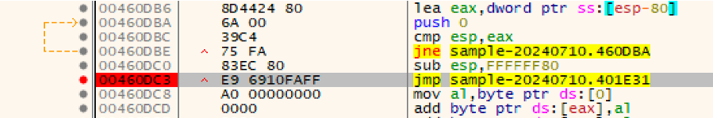
After the tail jump, execution is transferred to a new code block starting at address 0x401E31, as shown in the figure below. This address corresponds to
the Original Entry Point of the unpacked executable.
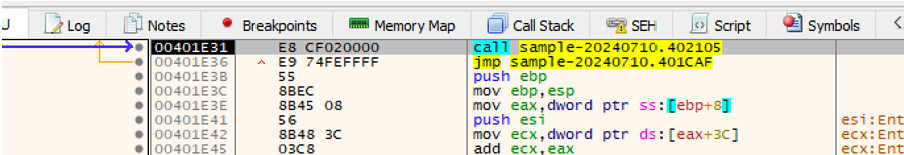
Once the OEP is identified, Scylla can be used to dump the unpacked binary. By selecting IAT Autosearch and providing the OEP address (0x401E31),
Scylla automatically locates the Import Address Table and retrieves its virtual address and size. The import list can then be extracted using Get Imports;
any invalid entries, as shown in the screenshot, can be manually removed. Afterward, the process memory is dumped by clicking Dump, generating a file with the _dump suffix.
Finally, using Fix Dump on the generated file produces a new executable (with the _SCY suffix) containing the reconstructed IAT.
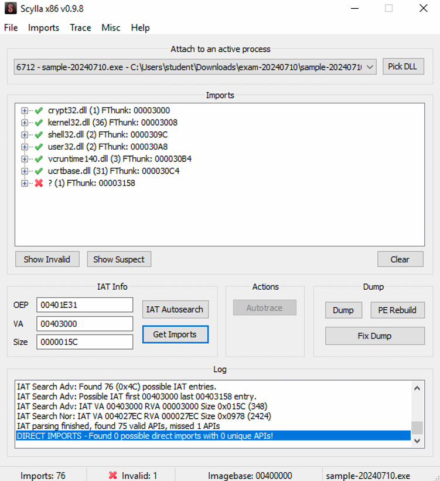
Dynamic Analysis
After opening the unpacked sample in IDA, the binary appears as shown in the figure below.
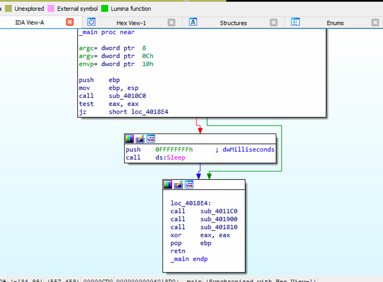
First, the sample invokes the function sub_4010C0. Within this function, the sample resolves and calls GetTickCount,
whose API name and the corresponding kernel32.dll library are XOR-encrypted and decrypted at runtime using the key 0x30.
Additionally, the strings required to load GetTickCount are pushed onto the stack byte by byte, a technique used to evade basic static analysis.
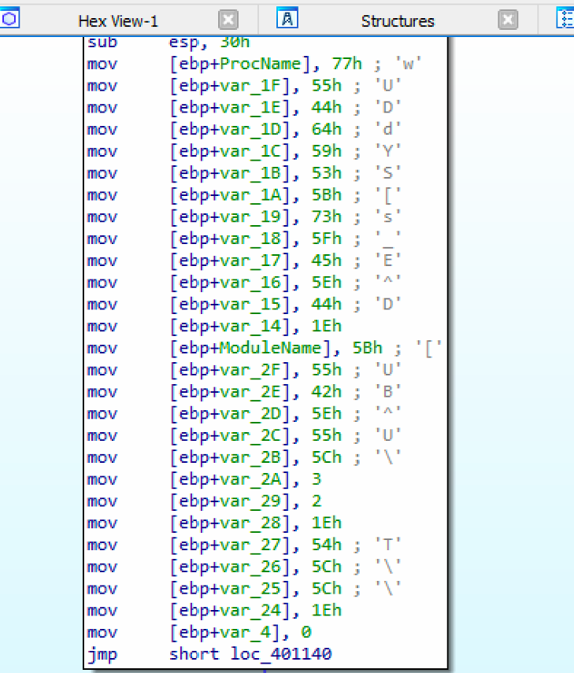
The retrieved tick count is then compared against 1800000 milliseconds. If the system uptime exceeds this threshold, the function returns 0 and the sample continues execution.
Otherwise, the program invokes Sleep with a timeout of 0xFFFFFFFF, effectively pausing execution for an extremely long period.
In sub_4011C0, the sample first calls GetCurrentProcessId to retrieve the identifier of the current process.
It then invokes CreateToolhelp32Snapshot with dwFlags = 0x8 to obtain a snapshot used to enumerate running processes and loaded modules.
The functions Module32FirstW and Module32NextW are subsequently used to iterate through the module list.
During this enumeration, the sample checks for the presence of specific strings within module names, including daimao, piccolo, zamasu,
dercori, and frost. If any of these strings are found, execution proceeds to sub_401000.

Within sub_401000, the sample calls SHGetFolderPathA with CSIDL = 0x27 to retrieve the path to the user’s Pictures directory:
"C:\Users\student\Pictures".

The function then invokes CreateFileA with dwDesiredAccess = 0x40000000 (GENERIC_WRITE) to create or open a file,
followed by a call to WriteFile to write the file mafuba.jpg into the previously identified Pictures directory.

The figure below shows that the file mafuba.jpg has been successfully created in the Pictures directory.

The routine then calls SystemParametersInfoA with uiAction = 0x14, causing the previously written image to be set as the desktop wallpaper.
Subsequently, the function sub_401900 is executed. This routine calls SHGetFolderPathW with CSIDL = 0x07
to retrieve the path of the Startup folder: C:\Users\student\AppData\Roaming\Microsoft\Windows\Start Menu\Programs\Startup. It then creates a copy of the current
executable in this directory using CopyFileW, renaming it to 7z.exe. Through this mechanism, the sample establishes persistence by
ensuring execution after a system reboot.

The image below shows the sample successfully copied into the Startup directory.
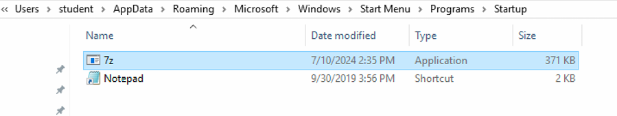
The function sub_401810 implements a DLL injection routine. It first invokes sub_4017D0, which is responsible for
extracting an embedded resource from the executable. Specifically, the sample calls FindResourceA, LoadResource,
LockResource, and SizeofResource to locate and load the resource, stored in .rsrc section, into memory.
The routine then invokes sub_401380, which is responsible for resolving a writable temporary directory. Inside this function, the sample calls
GetTempPathA to retrieve the system temporary path: C:\Users\student\AppData\Local\Temp.
Then the routine calls GetTempFileNameA, passing the previously resolved temporary path as lpPathName.
This API is used to generate a unique temporary filename within the temporary directory. In the analyzed environment, the generated file name was scz52A9.tmp,
located in the system’s temporary folder.

The figure below illustrates the presence of the generated temporary file within the system’s temporary directory.
At this stage, the file has a size of 0 bytes because no data has been written yet; only an empty file with the .tmp extension has been created.
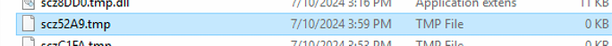
Then the routine calls CreateFileA with dwDesiredAccess = 0x40000000 (GENERIC_WRITE) to create the DLL file,
named scz52A9.tmp.dll.
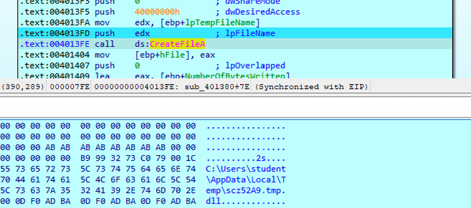
Notably, the .dll extension itself is pushed onto the stack byte by byte, a technique used to hide the file type and prevent it from being easily identified
during basic static analysis.
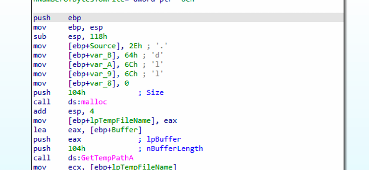
At the end of the routine, the sample invokes WriteFile to write 0x2A00 bytes of malicious code into the previously created DLL file.
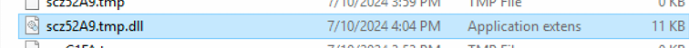
After returning from sub_4017D0, the execution flow goes back to sub_401810. At this point, the sample calls
CreateProcessA to spawn the process explorer.exe in a suspended state, as indicated by the flag
dwCreationFlags = 0x4 (CREATE_SUSPENDED). Additionally, the name of the target process to be injected is pushed onto the stack byte by byte,
preventing it from being directly visible during a static analysis, as shown in the figure below.
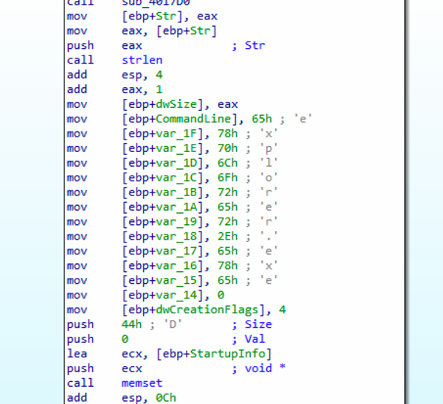
Then the execution continues with a call to the function sub_401730. Inside this routine, the sample invokes sub_401430,
which is responsible for dynamically resolving critical Windows APIs. Specifically, it relies on sub_401AC0 to decrypt, at runtime, the names of several
sensitive functions that are commonly associated with process injection, including: NtUnmapViewOfSection, SetThreadContext,
ResumeThread, NtCreateThreadEx, SuspendThread, VirtualAllocEx,
GetThreadContext, WriteProcessMemory, LoadLibraryA.
The figure below illustrates a routine that processes a string stored in the .data section at address 0x453000.
The function first invokes a decryption routine to decode the string in memory, then calls GetModuleHandle and GetProcAddress
to dynamically resolve and load the corresponding API at runtime. After that, the base offset is incremented by 4 bytes to point to the next encrypted string, and the same sequence of operations is repeated.
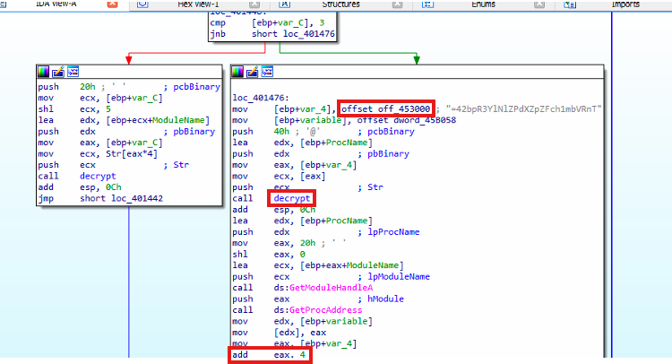
The figure below shows the memory address where the encrypted strings are stored.
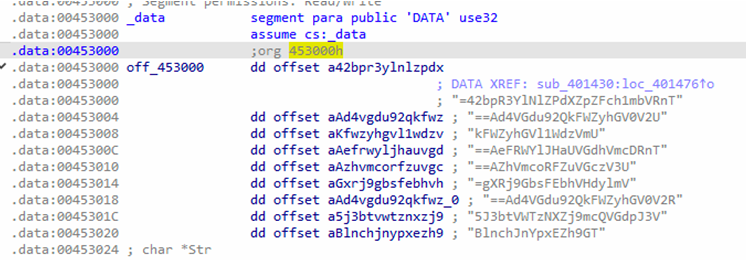